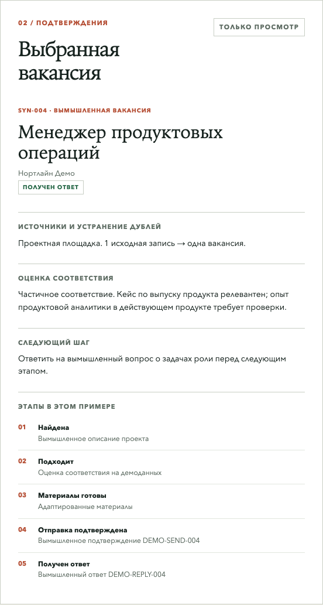

Контекст и задача
Вакансии приходят из разных источников и повторяются. Если вести поиск без журнала, легко потерять причину отказа, откликнуться дважды или принять подготовленное письмо за отправленное. В рабочей системе есть CRM, список исключений и журнал статусов. Они закрыты: на этой странице нет названий компаний, контактов, резюме и переписки.
Процесс
Обнаружение → нормализация → проверка дублей и ограничений → анализ соответствия → материалы под вакансию → подтверждённая отправка → срок следующего действия → ответ и его анализ. Для подготовки, отправки, ответа, собеседования и оплаченной работы нужны отдельные подтверждения. Наличие черновика не означает, что отклик ушёл.
Архитектура и выбор
Закрытый процесс использует сохранённые записи и человеческую проверку перед внешним действием. Для портфолио создан отдельный журнал. Шесть вымышленных строк загружаются в SQLite; SQL-запрос оставляет по одной записи на вакансию и формирует статический JSON-файл. Браузер только читает этот файл. Демо не меняет рабочую CRM и не отправляет сообщений.
Открыть вымышленный журнал ↗ · Посмотреть код демо и SQL ↗ · Технический разбор на русском ↗

Роль ИИ и человека
Codex помогает искать вакансии, разбирать требования и готовить материалы. Я задал правило: без подтверждения нельзя считать письмо отправленным или записывать ответ работодателя. SQL-запрос, генератор файла и публичный интерфейс написал Codex. Я не выдаю эту работу за самостоятельную SQL-разработку. Факты для отклика берутся из резюме и проверенных событий.
Что обнаружили и исправили
Первый браузерный проход показал, что после изменения фильтра панель деталей могла оставаться на записи, скрытой из списка. Интерфейс теперь выбирает видимую запись. Счётчики рассчитываются из того же файла, что и строки журнала. Поэтому в демо числа совпадают с тем, что посетитель видит на экране.
Результат и границы
В публичном журнале можно проверить, как убираются дубли, учитываются исключения и подтверждаются этапы. В демо шесть исходных строк превращаются в пять уникальных возможностей; две условные отправки и один условный ответ относятся только к образцу. Реальная CRM остаётся источником истины для поиска. Показатели реальных ответов, собеседований, трудоустройства или дохода здесь не заявлены.